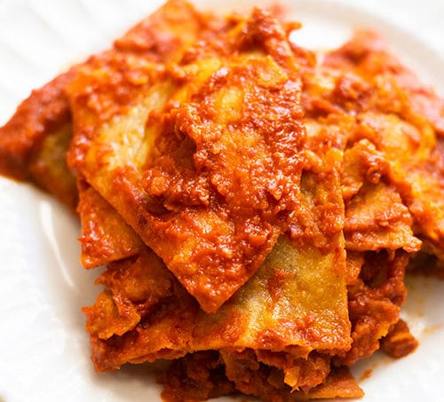

My favorite Red Chilaquiles Recipe

Description
There are many many variations of chilaquiles out there. Have a taste of this very
simple dish taught to me by my mother! It's a quick and affordable meal that can
be had at any time of the day. No need to fuss with many ingredients. We've got
canned tomato sauce, tortillas, a few extra ingredients, and time. Give it
a chance and you won't regret it!
Ingredients*
- 20 Corn tortillas
- 2 Cups Oil
- 1 16 oz can of Tomato Sauce
- 1/4 white onion
- 2 cloves of garlic
- 2 Tbs Chicken Bouillon
- Water as needed
- Garnish to your liking!
Steps
- Cut or Tear tortillas into bite sized pieces while heating up oil in pan.
- Fry Tortillas in batches until golden and crispy.
- Blend Tomato sauce with onion and garlic.
- In a different hot pan, combine sauce and enough water to be just below the top of the chips. Heat until boiling then reduce to simmer.
- Add Chicken Bouillon and salt to taste. Be aware that sauce will reduce so don't over salt!
- Add tortillas chips to sauce and simmer until sauce thickens and is absorbed by chips.
- Serve and garnish to your liking. I prefer crema, chile rojo, and queso fresco.
*Wrote this on the spot so proportions may be a bit off. Be a cook about it and play with your food!